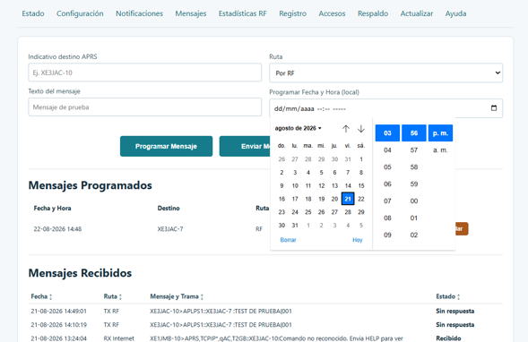
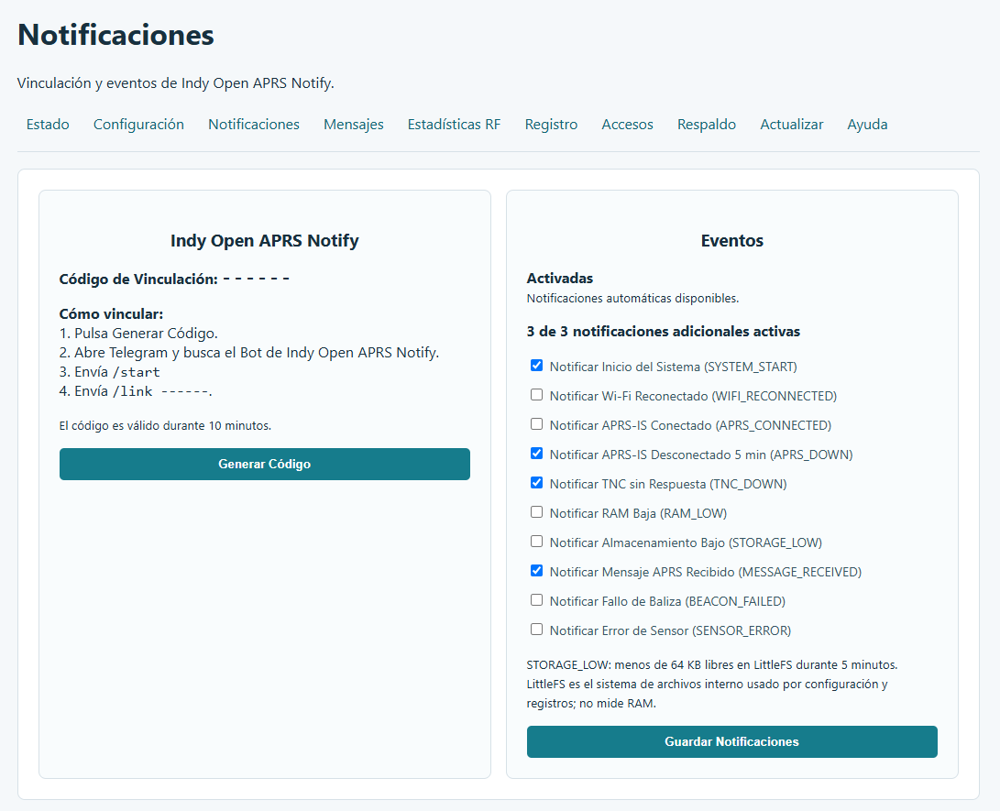

1. Descripción general
Indy Open APRS proporciona una interfaz web para configurar y supervisar un sistema APRS basado en ESP8266 y Nano TNC. Desde ella se administran accesos, red, APRS-IS, estación, mensajes, estado, contactos, actualizaciones, respaldos y diagnóstico.
AP local y credenciales OTA.
Red, APRS-IS, estación, TNC y telemetría.
Mensajería APRS por RF o Internet.
Diagnóstico, sensores y RF.
2. Arquitectura del sistema
El ESP8266 ejecuta Indy Open APRS. La Nano TNC utiliza firmware independiente y atiende la comunicación APRS por RF mediante TNC/KISS.
3. Perfiles de firmware: iGate y Tracker
Indy Open APRS dispone de dos perfiles principales que comparten la plataforma ESP8266 / NodeMCU + Nano TNC, pero están orientados a funciones diferentes.
| Función | Indy Open iGate | Indy Open Tracker |
|---|---|---|
| APRS por RF | Sí | Sí |
| APRS-IS | Sí | No |
| Balizas | RF y APRS-IS | RF mediante GPS |
| Mensajes | RF, Internet o ambos; hasta 7 programados | Sólo RF; sin programación |
| Digipeater | New-N limitado + WIDE1-1 opcional | Fill-in WIDE1-1 |
| SmartBeaconing | — | Sí |
| Indy Open APRS Notify | Sí | No |
Indy Open iGate
Recibe APRS por RF, publica tráfico válido en APRS-IS y transmite balizas por RF y APRS-IS. Las salidas son independientes; APRS-IS requiere una sesión validada mediante logresp ... verified.
Digipeater
- New-N limitado para
WIDE2-1yWIDE2-2. - No repite
WIDE3-nni superiores. - El soporte Fill-in
WIDE1-1depende del interruptor principal. - Evita duplicados y loops.
Notify
Puede vincularse con Indy Open APRS Notify mediante un código temporal. El ESP8266 utiliza Indy Open Notify Relay y no Telegram directo.
Indy Open Tracker
Genera balizas APRS de posición y telemetría por RF a partir del GPS. No utiliza APRS-IS ni Indy Open Notify/Telegram.
GPS y SmartBeaconing
Baudios GPS: 4800, 9600, 19200, 38400, 57600 y 115200. Predeterminado: 9600.
SmartBeaconing adapta los intervalos según velocidad, giro y estado estacionado. Desactivado, utiliza el intervalo fijo.
Ruta RF y Digipeater
Ruta inicial: WIDE1-1,WIDE2-1. Una ruta vacía transmite directa.
El Digipeater del Tracker funciona exclusivamente como Fill-in WIDE1-1; no consume WIDE2 ni funciona como New-N.
Funciones específicas del Tracker
Permanece 30 minutos en RAM, sólo sirve para Baliza de Prueba RF y desaparece al reiniciar o recibir GPS real.
Son únicamente por RF y no dispone de programación de mensajes.
Estaciones, paquetes, DIGI, DX, nivel RX, audio dBV y última recepción.
La telemetría sólo se agrega cuando el sensor está habilitado y tiene una lectura válida.
4. Accesos y seguridad

Permite configurar el nombre y contraseña del AP local, además del usuario y contraseña utilizados para operaciones OTA.
Credenciales predeterminadas
| Acceso | Usuario / SSID | Contraseña |
|---|---|---|
| Acceso OTA | admin | indygate |
| Wi-Fi / Access Point | admin | indygate |
5. Configuración general

Modo de operación
Las opciones visibles dependen del perfil instalado. iGate incorpora APRS-IS y funciones de gateway; Tracker incorpora GPS, SmartBeaconing y operación orientada a balizas móviles.
Red
Wi-Fi SSID, contraseña, DHCP/IP estática, máscara, gateway y DNS.
APRS-IS
Indicativo, passcode, servidor, puerto y filtro APRS-IS.
Estación
Latitud, longitud, símbolo, comentario, estado, intervalo de baliza y ruta RF.

TNC y tiempo
Baud rate TNC, retardo DIGI, reinicio automático, UTC, NTP y potencia del AP.
Telemetría
Incluye opciones relacionadas con beep, OLED, reenvío APRS-IS → RF, voltaje y sensores.
6. Mensajes APRS y programados


iGate: permite enviar mensajes por RF, Internet o RF + Internet. Tracker: utiliza mensajes únicamente por RF y no dispone de programación.
Mensajes programados y calendario
El iGate permite programar mensajes para una fecha y hora local. Se indica el destino APRS, el texto, la ruta y el momento de envío mediante el selector de calendario y hora.

Los mensajes pendientes aparecen en Mensajes Programados, mostrando fecha y hora, destino y ruta.
7. Notificaciones
El iGate integra Indy Open APRS Notify para recibir avisos del estado del sistema.

Vinculación
- Pulse Generar Código.
- Abra Telegram y busque el Bot de Indy Open APRS Notify.
- Envíe
/start. - Envíe
/linkseguido del código generado.
El código es válido durante 10 minutos.
Eventos disponibles
SYSTEM_START notifica el inicio del sistema. Además pueden seleccionarse hasta 3 notificaciones adicionales: Wi-Fi reconectado, APRS-IS conectado, APRS-IS desconectado durante 5 minutos, TNC sin respuesta, RAM baja, almacenamiento bajo, mensaje APRS recibido, fallo de baliza y error de sensor.
Indy Open APRS Notify corresponde al perfil iGate. El Tracker no utiliza esta función.
8. Estado y contactos

La pantalla muestra tiempo encendido, red, APRS-IS, TNC/KISS, RX/TX RF, sensores, voltaje y OLED.

Contactos resume actividad RF reciente y estaciones recibidas.
9. Actualización OTA

Seleccione un archivo .bin creado para el ESP8266 y para el perfil correcto. OTA conserva configuración e historiales: utilice únicamente un binario iGate en iGate y Tracker en Tracker.
10. Respaldo y restauración

Permite descargar la configuración, restaurar un respaldo o borrar configuraciones conservando el firmware.
11. Registro

Los filtros de diagnóstico permiten revisar la actividad del sistema. En iGate incluyen eventos de APRS-IS y RF/DIGI; Tracker mantiene su propio registro RF.
UART TNC y KISS
UART TNC perdidos ESP→TNC / TNC→ESP indica bytes descartados por overflow UART, no paquetes APRS correctos. Una trama KISS fragmentada se conserva entre ciclos; si no llega 0xC0 en 250 ms, se descarta.
RAM libre ESP8266 mínima
- Bien: 12 KB o más.
- Normal: 8 KB a menos de 12 KB.
- Baja: menos de 8 KB.
Esta etiqueta es informativa y no modifica los umbrales internos.
12. Pantalla OLED

La OLED utilizada es de 0.96 pulgadas y 128×64 píxeles. Las tres vistas operativas son fijas y se cambia entre ellas pulsando el switch o botón físico del sistema.
- Vista de sistema e iGate.
- Vista TNC/KISS y RF.
- Vista de sensores y estado I2C/OLED.
También puede mostrarse un bitmap monocromático 128×64 como pantalla de inicio.
13. Instalación inicial por USB
- Conecte el ESP8266 mediante un cable USB de datos.
- Identifique el puerto serie.
- Seleccione el firmware correcto.
- Inicie la programación.
- Espere la confirmación.
- Reinicie y realice la configuración inicial usando las credenciales predeterminadas
admin/indygate.
14. Nano TNC basada en ATmega
La Nano TNC es independiente del firmware Indy Open del ESP8266. Debe programarse con su firmware específico.
- Conecte la Nano por USB.
- Identifique el puerto.
- Confirme ATmega/bootloader.
- Cargue el firmware TNC.
- Espere la verificación.
- Reconecte la Nano al sistema.
- Compruebe TNC/KISS desde Indy Open APRS.
La publicación histórica del proyecto acredita el firmware TNC a SQ9MDD.
15. Instalación mediante Web Flasher
El Web Flasher permite instalar el firmware del ESP8266 desde un navegador compatible utilizando USB.
- Conecte el ESP8266.
- Abra el Web Flasher.
- Seleccione el perfil iGate o Tracker.
- Autorice el acceso al puerto serie.
- Inicie la instalación.
- Espere al 100 %.
- Reinicie el equipo.
| Método | Conexión | Uso |
|---|---|---|
| Web Flasher | USB | Primera instalación o recuperación |
| OTA | Red | Actualización de un equipo ya operativo |
| USB tradicional | USB | Programación manual |
16. Historia y créditos
Indy Open APRS utiliza como plataforma física de referencia la PCB TA1KNN. El firmware Indy Open APRS es un desarrollo posterior para el ESP8266.
| Elemento | Autor / referencia |
|---|---|
| Firmware actual | XE3JAC |
| Firmware actual TNC | XE3JAC |
| PCB / hardware | TA1KNN |
| Firmware original TNC | SQ9MDD |
Se recomienda conservar las licencias, avisos y créditos que acompañen cualquier componente de terceros que se distribuya con el proyecto.
16. Recomendaciones
- Configure accesos y red antes de operar.
- Cambie las credenciales predeterminadas
admin/indygatedespués de la primera configuración. - Verifique el modo de operación.
- Compruebe indicativo, posición y ruta RF.
- Use Estado y Registro para diagnóstico.
- Realice un respaldo de una configuración estable.
- Mantenga alimentación estable durante OTA y Web Flasher.
- No mezcle el firmware del ESP8266 con el de la Nano TNC.